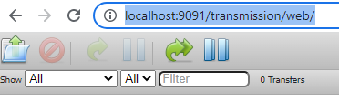

После установки Transmission, с этим торрент-клиентом можно работать как из командной строки, так и через WEB-интерфейс.
Для того, чтобы подключитья в браузере к ядру Transmission через веб-интерфейс, надо вначале убедиться, что запущен демон трансмиссии. В Linux надо проверить, что есть процесс transmission*. В Windows должен крутиться процесс transmission-daemon.exe, который виден в диспетчере задачь под именем Transmission Daemon.
Если процесса нет, то его надо запустить. В Windows для этого можно запустить файл:
C:\Program Files\Transmission\transmission-daemon.exe
Для подключения к web-интерфейсу, в браузере надо открыть следующую страницу:
http://localhost:9091/transmission/web/
Внимание! Если не указать последний слеш "/", то будет выдаваться ошибка:
409: Conflict
Your request had an invalid session-id header.
To fix this, follow these steps:
X-Transmission-Session-Id: VFxT5h1vw0hmpU5oATCSMorQzQ1L1LSr2mia5fINtaDBDn9k
В результате в браузере должна открыться страница с пользовательским интерфейсом для закачки файлов:
